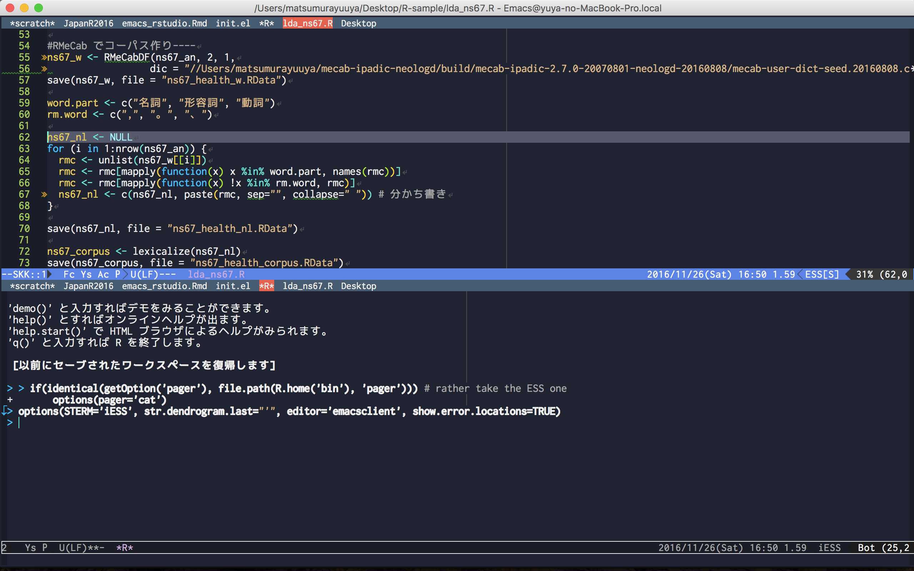

RStudio は、ほとんどの R ユーザーにとってベストだと私が考えている開発環境です。
『 R パッケージ開発入門』より
RStudio の唯一の競争相手は、Emacs Speaks Statistics (ESS) (https://ess.r-project.org/) だと思います。Emacs を学び、自分に合うようにカスタマイズする時間を費やすのを惜しまない人にとっては、やりがいのある開発環境でしょう。
『 R パッケージ開発入門』より
*.R ファイルを開くと自動でウィンドウ分割して R を起動するよう設定 
output: html_notebookjavascript ベースで描画するパッケージ(leafret, plotly, dygraphs,…)はブラウザじゃないと見られない
→テキストエディタの限界？
RStudio が向いてる人
ESS が向いてる人
この話の詳細(実装方法など)は RStudio Advent Calendar 22 日目の記事で書く予定です
本日の資料置き場